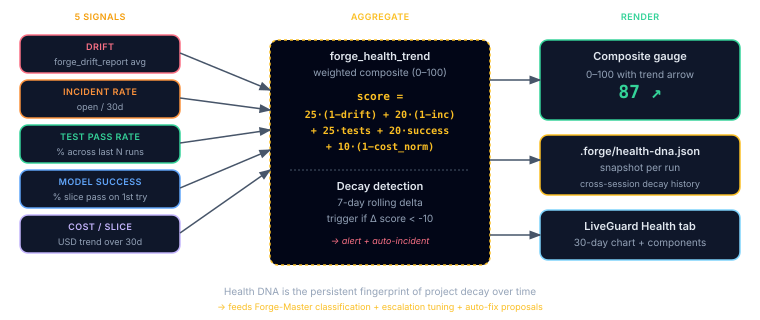

Health DNA
A single fingerprint for "how healthy is this project today?", persisted, trended, compared.
- What it measures, drift, incidents, test pass rate, AI model success rate, and cost per slice. Five numbers, one composite score.
- Why one number? Any single metric can lie (100% green tests + drowning in drift). The composite catches the lie.
- What you do with it, the LiveGuard dashboard plots the score over time. A 7-day downward trend is the early warning to slow down and clean up before shipping more features.
forge_health_trend (LiveGuard), writes .forge/health-dna.jsonl. Intent: health-dna. Aliases: health-analysis, system-health, health-report.
Why a Fingerprint?
Any single metric can lie. A project with 100% green tests can still be drowning in drift. A low drift score can mask a CVE backlog. The Health DNA combines five independent signals into one daily fingerprint so slow decay, the kind where everything looks fine but tomorrow's plan costs 2× yesterday's, becomes visible.
The Five Signals

| Signal | Source | What it catches |
|---|---|---|
| Drift score | forge_drift_report | Architecture diverging from plan baseline |
| Incident rate | forge_incident_capture | Production failures over trailing window |
| Test pass rate | CI + testbed findings | Regression risk |
| Model success rate | Orchestrator telemetry | Agent failures + escalation frequency |
| Cost per slice | Cost ledger | Token-burn creep, the project getting harder to reason about |
Record Shape
{
"timestamp": "2026-04-20T00:00:00Z",
"driftScore": 0.91,
"incidentRate7d": 0,
"testPassRate": 0.998,
"modelSuccessRate": 0.96,
"costPerSlice": 0.34,
"composite": 0.93,
"delta7d": -0.02,
"delta30d": -0.08
}composite is a weighted blend computed inside forge_health_trend (current default weights: drift 0.30, incident-rate 0.25, test-pass 0.20, model-success 0.15, cost 0.10, see pforge-mcp/server.mjs). delta7d and delta30d compare against historical records, a small negative delta is noise, a sustained negative delta is decay.
Decay Detection
The watcher can alert on Health DNA thresholds:
delta7d < -0.10, short-term regression, usually tied to a specific slice.delta30d < -0.15, long-term decay, usually architectural.composite < 0.60, absolute floor; blocks new executions until addressed.
Dashboard
The LiveGuard dashboard's Health tab renders the composite score as a sparkline, with per-signal sub-lines toggleable. The Forge Intelligence page cross-references Health DNA with the OpenBrain memory corpus, "your drift score dropped the day you added the new caching layer" is exactly the kind of conclusion the Learn station exists to surface.